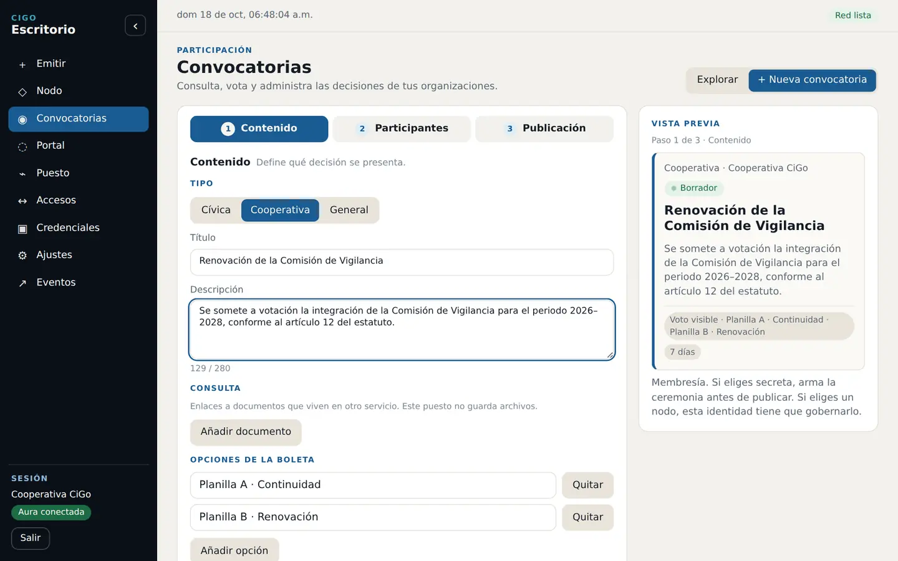
1 · Door
Publish the call.
The administrator defines the question, required credential, scope and period. Only people covered by that credential can see the vote.
Verifiable credentials, voting and access from each person's phone and the institution's desktop.
Choose your context
Choose your sector. See the operational result before the technology that makes it possible.
Union or professional body
Leadership issues verifiable credentials, opens a vote for current members and exports its close. Push notifications and private mode with ZKP remain under integration during the pilot.
University or school
The institution issues credentials to its community and chooses the processes to operate: library, laboratory, activities or internal consultations.
Condominium or residence
The gate checks presentations from the phone and keeps a local log. The community can also test an internal consultation or assembly.
Event organization
The pilot can test event creation, issuance, admission, cancellations, refunds and distribution without moving real money.
Civil Protection and risk management
The authority reviews the plan credential linked to a performance and checks its reference, validity, responsible parties, approved capacity, document fingerprint and revocation from a QR inspection card.
CiGo assists verification; it does not replace the plan, inspection, authorization or powers of the authority.
Current operation
Door organizes operations; CiGo lets people act from their phone; every close leaves evidence to review and keep.
Voting journey
The organization publishes from Door, the person votes and keeps a receipt in CiGo, and the caller closes the process to generate the record.

1 · Door
The administrator defines the question, required credential, scope and period. Only people covered by that credential can see the vote.
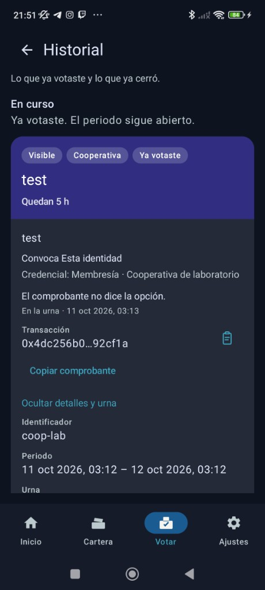
2 · CiGo
The person signs from their phone. The receipt proves participation without publishing the selected option.
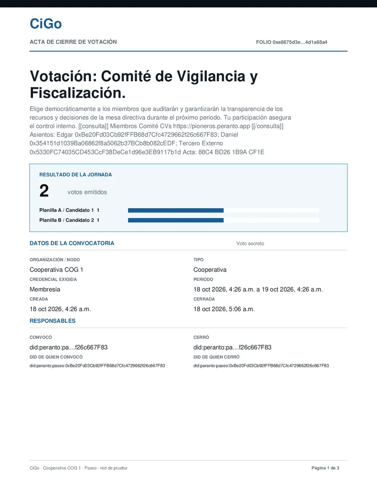
3 · Closing
The document contains the result, period, responsible parties, reference, transactions and participation. This sample uses fictional data on a test network.
Download PDF record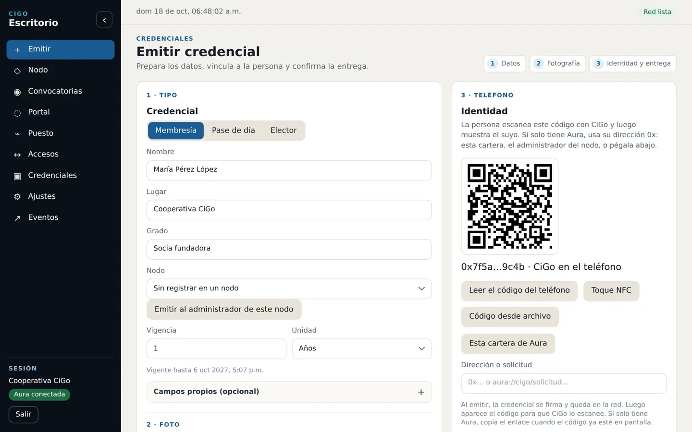
Door · operations team
Staff prepare data, link the phone identity and deliver the credential from one screen.
Request a Door demonstration →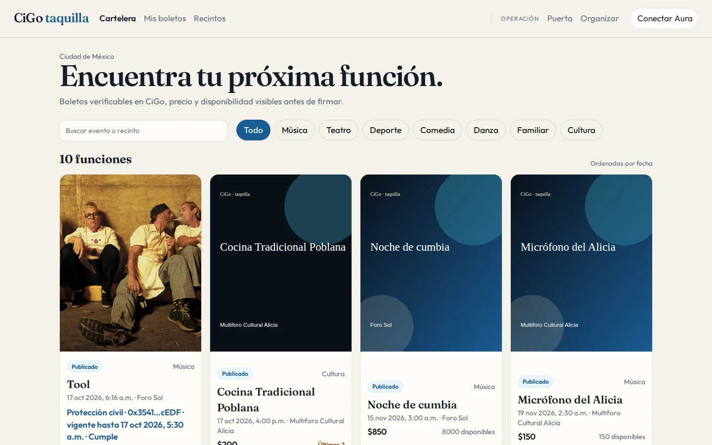
Tickets · desktop
The listings show date, venue, price and availability before a person signs a purchase.
Open listings →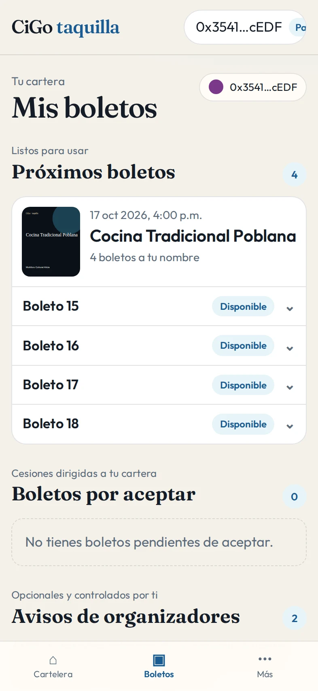
Tickets · mobile
People review their tickets from the wallet, identify each performance and present them at the gate without changing applications.
Screens from the current Door and Tickets versions. Visible names and addresses are abbreviated demonstration data.
Wallet on the phone
Control desk on the laptop
The wallet presents from the phone and the desk verifies on the institution's computer.
Service for Civil Protection
The proposal connects the authorized document to the event that is actually published and gives inspectors a simple consultation view.
The authority or authorized third party issues a credential with reference, plan fingerprint, capacity, responsible parties and validity. The organizer links it to the performance.
The QR card shows whether the credential remains active and whether approved capacity covers the tickets published for that performance.
If the plan is no longer valid, its issuer revokes it. The consultation stops showing it as current without replacing the authority's decision.
Recommended pilot
Measure consultation time, capacity discrepancies, expired documents and ease of use for organizers and inspectors.
Pioneer call · 12 weeks
The institution chooses one or two processes, operates them with real people and finishes with results it can evaluate.
Agreement, owners, process and success criteria.
Setup, training and credential issuance.
Voting, access or ticketing with guidance.
Results, incidents, close and next decision.
Peranto provides
Setup, training, usage support, bug fixes and evaluation of additional hardware.
The institution provides
Participants, owners, equipment, required hardware and time to train its community.
Unions and professional bodies
Leadership issues verifiable credentials for members, opens internal votes and keeps traceability of the close. The app shows available calls; push notifications are being integrated.
Each member receives a digital credential in CiGo. The same app proves membership and opens the vote.
The organization opens a vote for whoever holds a valid credential. The member views the call and votes in the app. Private voting is an experimental function during the pilot.
Closing exports the count and traceability as CSV. The responsible person uploads it manually to Documents and signs it with the credential selected for the process, including one proving possession of a FIEL or FIREL.
Participants view the result and keep a receipt proving participation without revealing the choice. In private votes, the choice is encrypted; the contract and ZKP management remain under development.
A three-month pilot with no monetary implementation cost for up to 50 members. The union provides equipment, participants, internal training and the agreement.
In no more than 20 minutes you can see issuance, the vote and the closing of the minutes, to speed up how a labor-rights union organizes its work.
Desk log
Every presentation is written to Access. The desk counts the day, separates entries and exits, and keeps the open visit in front of whoever runs the door.
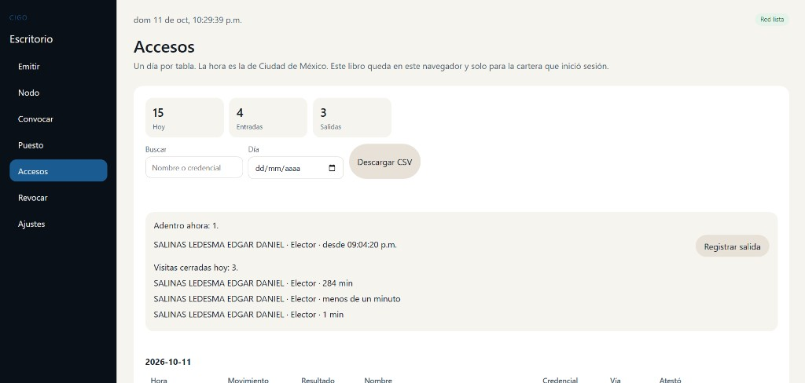
Name, credential and since what time. When the person leaves, the guard records the exit on that same line.
Closed visits for the day show the duration, in minutes or under a minute. Entries and exits are counted above.
The book records the credential, whether they passed, the channel and who attested. If the desk captures it, the destination and the place are recorded too.
One day per table. The time is Mexico City time. The book stays in that browser and only for the wallet that signed in. Search by name or credential, and download CSV.
At the desk
CiGo does not email a file for people to pass around. The administrator opens a challenge on the desk and the person signs it from their phone, by NFC or with the desk QR.
The administrator generates the challenge in the desk app. The person presents the wallet on their phone and signs that challenge.
The organization uses its laptop with the CiGo desk, a commercial NFC reader, or the camera for the QR.
The challenge signature is secp256k1. The phone vault and the homomorphic vote are in the technical note.
Operational comparison
A PVC card is printed, lost and replaced. CiGo issues it in person and validates it at the desk.
| PVC card | CiGo | |
|---|---|---|
| Issuance | Print shop and hand-out. | ✓A challenge on the desk. The person signs from their phone. |
| Door | A physical card or a paper list. | ✓The organization's laptop, a USB NFC reader, or the camera for the QR. |
| Loss | Reprint and hand it out again. | ✓The previous credential is revoked and another is issued in person. |
| Cycle | Days at the print shop. | ✓A check at the desk in about 10 seconds. |
| Roll | A separate CSV or list. | ✓Each credential matches the phone that signed the challenge. |
Impact estimate
Move the parameters. The result is an estimate for deciding on the pilot, not a print-shop quote.
On the same phone
Tickets, voting, documents and things are not separate sites. They live in the CiGo wallet, bound to the same identity.
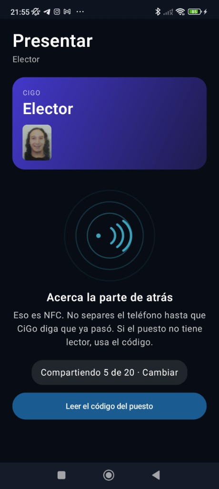
The person brings the phone to the reader, or shows the code if the desk has no NFC. The identity credential stays in the wallet.
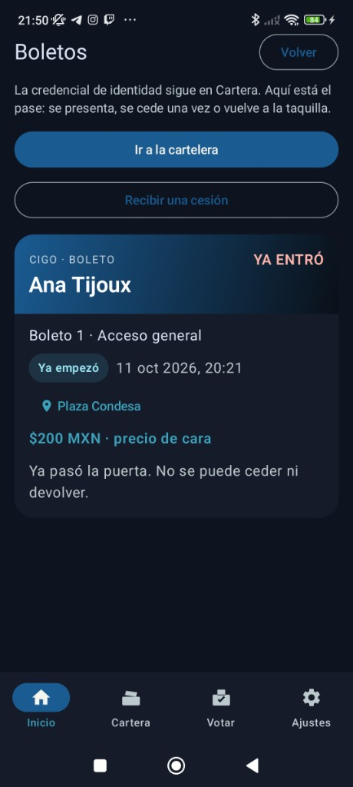
The pass is presented, transferred once, or returned to the box office. Once it has gone through the door, it cannot be transferred or returned. The price is face value.
The ballot asks for a valid credential and every vote is signed from the phone. The receipt proves participation without publishing the choice. Closing exports the count and traceability; private mode remains under development during the pilot.
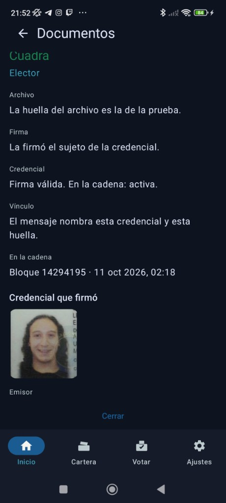
The signature is the credential subject's. The file hash is the proof, and the link names that credential.

An object carries a passport: what it is, who holds it and when it was handed over. The history changes hands without a loose PDF.
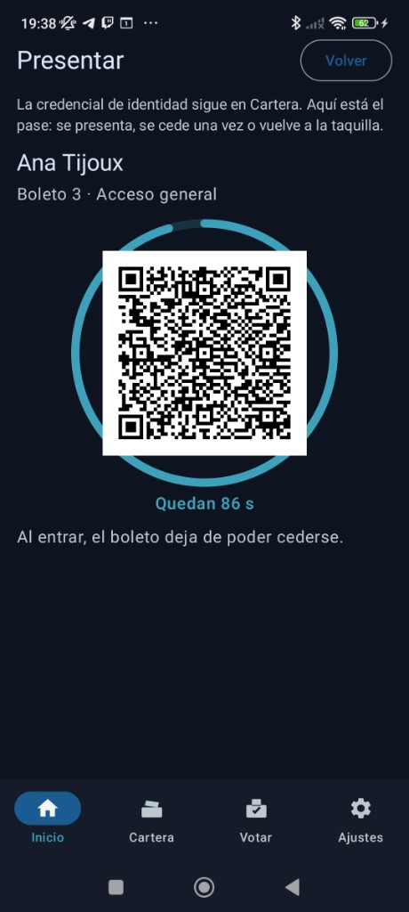
The ticket presentation lasts a few seconds. A screenshot in the group chat arrives late: once someone enters, the ticket can no longer be transferred.
Where it is used
The desk is the organization's laptop and a USB reader, or the camera. These scenes show the job, not a required turnstile.

University
The student presents the phone. The person at the desk sees the confirmation on the laptop.
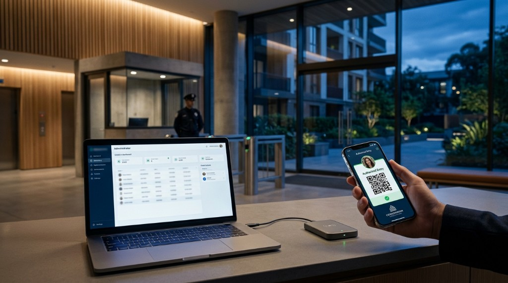
Condominium
Today a food courier leaves their government ID at the gate to enter the condominium or the parking lot. With CiGo they present the credential on their phone. The guard reads it on the laptop. The physical ID does not stay on the desk.

Union
Leadership issues the member credential and opens the call. At closing, it exports the count as CSV, manually adds it to Documents and signs it with the agreed verifiable credential. Each member keeps a receipt that does not reveal their choice.
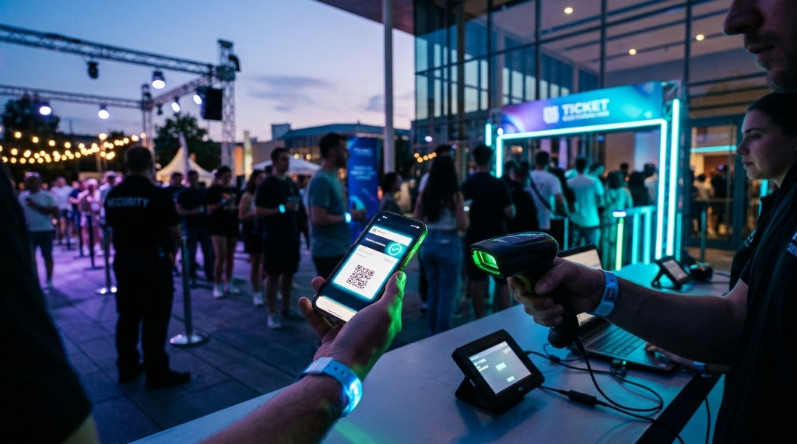
Venue
At the door, the laptop camera reads the signed presentation. The same screenshot, the second time, does not get in.
Success criteria
The number of participants and one or two primary processes are agreed at the start. Success is not measured by downloading an app, but by completing the workflow with the responsible people.
Agreed participants credentialed; administrators able to issue, verify and revoke; users able to present their credential.
One real call or session opened, operated, closed and documented; or an access log correctly used by the desk.
Events, test charges and distribution, admissions, counts, cancellations, refunds and business rules executed without moving real money.
Incidents are documented. Peranto fixes errors, and viable general needs enter the shared roadmap. Stable test releases of the contracts, app, desks and Aura are delivered during the pilot.
At the end
The institution may conclude the pilot, keep its documents and evaluate a next stage. Exit and later use of the institution's name remain subject to the agreement.
Optional continuation
Includes operational support and bug fixes. Hardware, network fees and exclusive development are not included. General improvements may enter the shared product; custom work is quoted separately.
Data and governance
Peranto does not operate a central database of personal information. Identifiable information captured to issue a credential stays in the browser on the institution's computer, and only that person's data enters their credential.
The roll and issuance data live in the institution's browser profile. If that profile is removed without a backup, local information may be lost.
The protocol records cryptographic hashes and public data needed to verify status and authorship, not identifiable content in clear text. A public hash may be correlatable and should be explained in the institution's notice.
The issuer can revoke. The caller closes the vote. Authorized node members may create calls. Self-service node closure does not yet have a UI and receives technical assistance.
Pilot contracts and operations run on a test network with PAS, a token with no real value. No real money moves. DIDs may include public data only when the person chooses to publish it; the pilot does not require personal information to become public.
Before deciding
Scope, operation, data, hardware and continuity.
The gate stops. The desk checks the registry anchored on the chain to see whether the credential is still valid. Without internet, that check does not close and there is no pass. The person does not need internet: the CiGo wallet carries the credential on the phone.
The administrator opens the challenge on the desk and the person signs it from their phone, by NFC or with the registration QR. The credential stays bound to that phone's keys.
The cycle we measure includes bringing the phone close, the NFC read or the QR focus, the signature check on the desk and the line the guard sees in the log. That cycle is above: the wallet on the phone and the desk on the laptop.
The organization's computer running the CiGo desk, internet at the gate, and a USB NFC reader or the camera for the QR. The desk does not require a turnstile or a separate server.
No. The person owns the data they signed, and they ask for access, rectification, cancellation or objection. CiGo does not send that request. The articles are under the signature and the data.
Issue a digital credential for each member and open internal votes. The call is viewed and voted on in the app; push notifications are being integrated. Closing exports count and traceability as CSV. The responsible person manually adds it to Documents and signs it with the agreed credential, including one proving possession of a FIEL or FIREL.
It runs for three months and has no monetary implementation cost for up to 50 participants. The institution provides equipment, phones, hardware, internal training and an agreement defining the scope for mentioning its participation. Above 50 participants, scope and cost are agreed.
No. It proves participation and does not state the marked choice. In private votes, the choice is encrypted; the contract and zero-knowledge-proof management remain under development during the pilot.
The institution may conclude the pilot or continue with support for MXN $1,500 per month for 12 months. This includes operational support and bug fixes. Hardware, network fees and exclusive development are not included; custom work is quoted separately.
For pilot participants
Installation takes place during onboarding. CiGo carries the credential on Android; Aura signs from the institution's computer.
Android · 0.1.120
Android 8 or newer. Developer mode is not required. Opening the file asks once for permission to install from Chrome.
Chrome may warn about installation outside the Play Store. This step is guided during the pilot. The recovery phrase is the only way to recover the wallet if the app is uninstalled.
Chrome · 0.2.0
The extension signs from the CiGo desk. It uses the same recovery phrase as the phone app.
The institution uses its own computers. Peranto helps with setup, training and hardware testing.